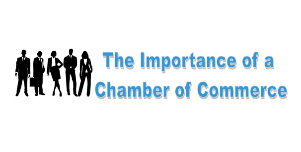

A Chamber of Commerce is a local, regional, or national organization made up of business owners, entrepreneurs, and professionals that aims to promote and support the interests of the business community. These organizations work as a bridge between businesses and government, fostering economic growth, networking, and collaboration within a specific area or industry.

Business Advocacy:
Represents the business community in policy-making, lobbying for favorable laws, regulations, and economic policies.
Networking Opportunities:
Provides platforms for businesses to connect, collaborate, and build partnerships through events, trade fairs, and seminars.
members of the chamber